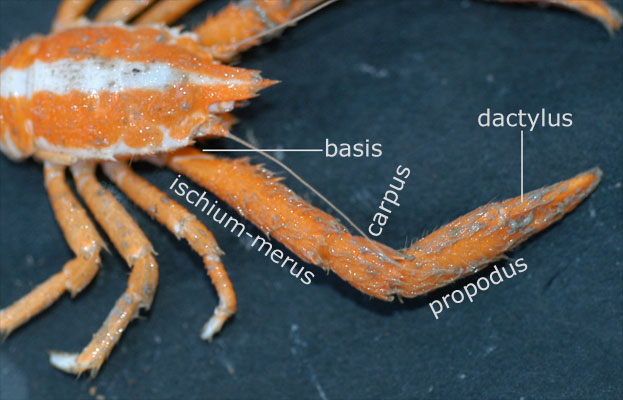

library(tidyverse)
library(tidymodels)
library(knitr)AE 16: Exam 02 Review
Important
The AE is due on GitHub by Thursday, December 08, 11:59pm.
Note: This in-class review is not exhaustive. Use lecture notes notes, application exercises, labs, homework, and readings for a comprehensive exam review.
Packages
Part 1: Multiple linear regression
The goal of this analysis is to use characteristics of loan applications to predict the interest rate on the loan. We will use a random sample of 1000 loans given by Lending Club, a peer-to-peer lending service. The random sample was drawn from loans_full_schema in the openintro R package. Click here for the codebook.
loans <- read_csv("data/loans-sample.csv")Exercise 1
Split the data into training (75%) and testing (25%) sets.
# add code hereExercise 2
Write the equation of the statistical model for predicting interest rate (interest_rate) from debt to income ratio (debt_to_income), the term of loan (term), the number of inquiries (credit checks) into the applicant’s credit during the last 12 months (inquiries_last_12m), whether there are any bankruptcies listed in the public record for this applicant (bankrupt), and the type of application (application_type). The model should allow for the effect of to income ratio on interest rate to vary by application type.
[Add model here]
Exercise 3
Specify a linear regression model. Call it loans_spec.
# add code hereExercise 4
- Predict
interest_ratefromdebt_to_income,term,inquiries_last_12m,public_record_bankrupt, andapplication_type. - Mean center
debt_to_income. - Make
terma factor. - Create a new variable:
bankruptthat takes on the value “no” ifpublic_record_bankruptis 0 and the value “yes” ifpublic_record_bankruptis 1 or higher. Then, removepublic_record_bankrupt. - Interact
application_typewithdebt_to_income. - Create dummy variables where needed and drop any zero variance variables.
# add code hereExercise 5
Create the workflow that brings together the model specification and recipe.
# add code hereExercise 6
Conduct 10-fold cross validation.
# add code hereExercise 7
Summarize \(R^2\) and RMSE metrics from your CV resamples.
# add code hereWhy are we focusing on R-squared and RMSE instead of adjusted R-squared, AIC, BIC?
[Add response here]
Exercise 8
Interpret the following in the context of the data:
Intercept
debt_to_incomefor individual applicationsterm
Part 2: Logistic regression
Data
As part of a study of the effects of predatory intertidal crab species on snail populations, researchers measured the mean closing forces and the propodus heights of the claws on several crabs of three species.

claws <- read_csv("data/claws.csv") |>
mutate(lb = as_factor(lb))We will use the following variables:
force: Closing force of claw (newtons)height: Propodus height (mm)species: Crab species - Cp(Cancer productus), Hn (Hemigrapsus nudus), Lb(Lophopanopeus bellus)lb: 1 if Lophopanopeus bellus species, 0 otherwisehn: 1 if Hemigrapsus nudus species, 0 otherwisecp: 1 if Cancer productus species, 0 otherwiseforce_cent: mean centered forceheight_cent: mean centered height
Getting started
- Why do we use the log-odds as the response variable?
[Add response here]
Fill in the blanks:
Use log-odds to …
Use odds to …
Use probabilities to …
Suppose we want to use force to determine whether or not a crab is from the Lophopanopeus bellus (Lb) species. Why should we use a logistic regression model for this analysis?
Exercise 9
We will use force_cent, the mean-centered variable for force in the model. The model output is below. Write the equation of the model produced by R. Don’t forget to fill in the blanks for ….
| term | estimate | std.error | statistic | p.value | conf.low | conf.high |
|---|---|---|---|---|---|---|
| (Intercept) | -0.798 | 0.358 | -2.233 | 0.026 | -1.542 | -0.123 |
| force_cent | 0.043 | 0.039 | 1.090 | 0.276 | -0.034 | 0.123 |
Let \(\pi\) be…
\[\log\Big(\frac{\hat{\pi}}{1 - \hat{\pi}}\Big) = \]
Exercise 10
Interpret the intercept in the context of the data.
Exercise 11
Interpret the effect of force in the context of the data.
Exercise 12
Now let’s consider adding height_cent to the model. Fit the model that includes height_cent. Then use AIC to choose the model that best fits the data.
lb_fit_2 <- logistic_reg() |>
set_engine("glm") |>
fit(lb ~ force_cent + height_cent, data = claws)
tidy(lb_fit_2, conf.int = TRUE) |>
kable(digits = 3)| term | estimate | std.error | statistic | p.value | conf.low | conf.high |
|---|---|---|---|---|---|---|
| (Intercept) | -1.130 | 0.463 | -2.443 | 0.015 | -2.167 | -0.306 |
| force_cent | 0.211 | 0.092 | 2.279 | 0.023 | 0.056 | 0.424 |
| height_cent | -0.895 | 0.398 | -2.249 | 0.025 | -1.815 | -0.234 |
Exercise 13
What do the following mean in the context of this data. Explain and calculate them.
Sensitivity: …
Specificity: …
Negative predictive power: …